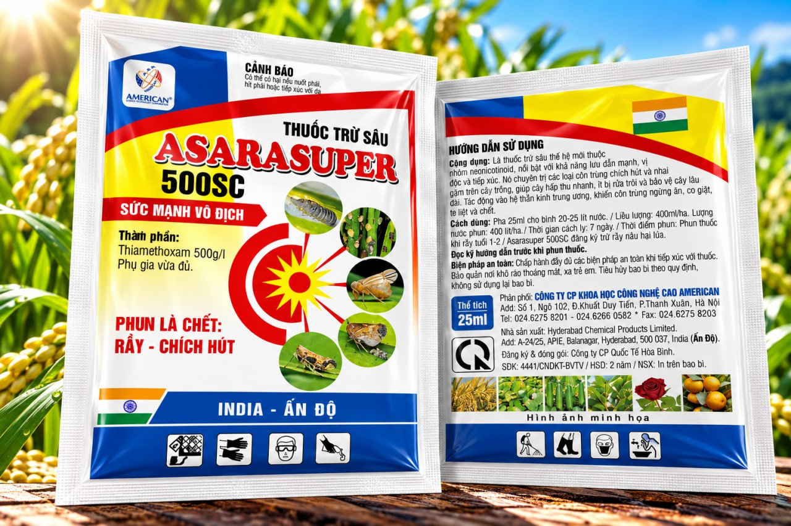
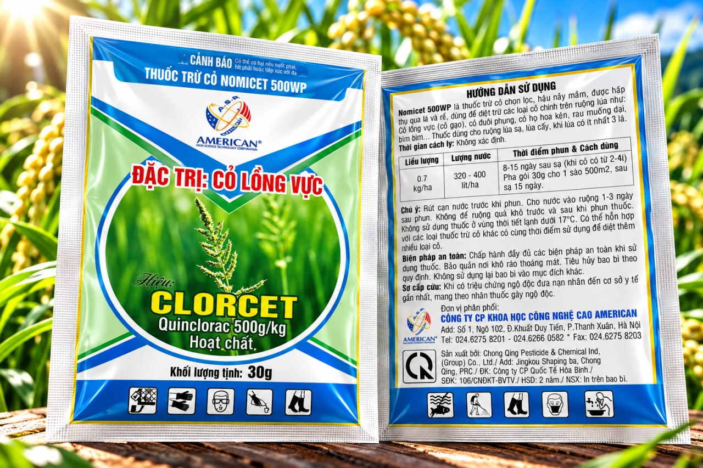
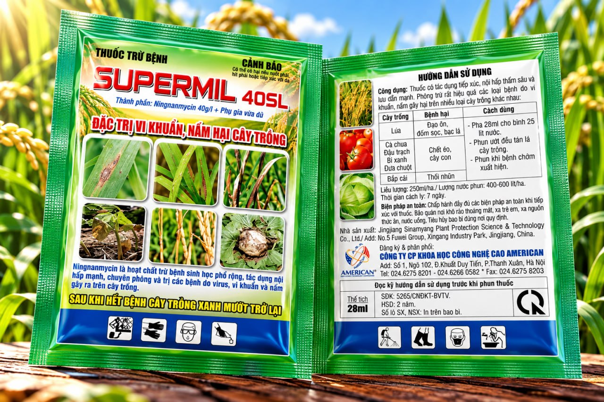
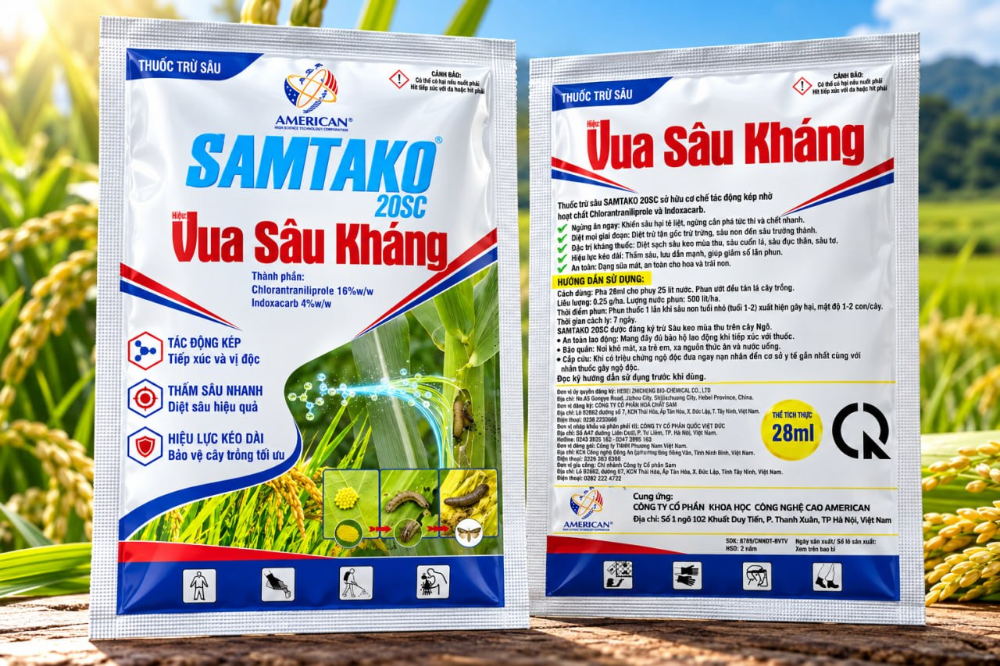

01 / Thuốc trừ sâu
ASARASUPER 500SC
Giải pháp lưu dẫn mạnh cho nhóm rầy và côn trùng chích hút.
Xem thông tin →American High Science Technology
Giải pháp bảo vệ thực vật hiệu lực cao, được nghiên cứu để kiểm soát dịch hại chính xác và đồng hành cùng nền nông nghiệp Việt Nam bền vững.

Hiệu lực kiểm chứngCông thức chuyên biệt
Danh mục đa dạngTheo cây trồng & dịch hại
Hỗ trợ kỹ thuậtĐồng hành cùng nhà nông
Phân phối rộng khắpHợp tác cùng đại lý
Sản phẩm chủ lực
Các sản phẩm nổi bật được giới thiệu luân phiên. Sếp có thể dừng lại, chuyển sản phẩm hoặc mở thông tin chi tiết ngay tại đây.
Danh mục giải pháp
Tiếp cận sản phẩm nhanh theo đúng vấn đề trên đồng ruộng, giúp người dùng dễ chọn và dễ tra cứu hướng dẫn.
01
02
03
Sản phẩm nổi bật
Mỗi sản phẩm được trình bày rõ hoạt chất, đối tượng phòng trừ và hướng dẫn sử dụng.



Về American
Thành lập ngày 10/12/2007, American là một trong những doanh nghiệp sớm hoạt động trong lĩnh vực khoa học cây trồng. Gần 20 năm qua, chúng tôi bền bỉ mang những sản phẩm chất lượng cao, hiệu quả thiết thực và giá thành hợp lý đến với Quý đối tác cùng người nông dân trên khắp cả nước.
Kiến thức đồng ruộng
Kết nối cùng American